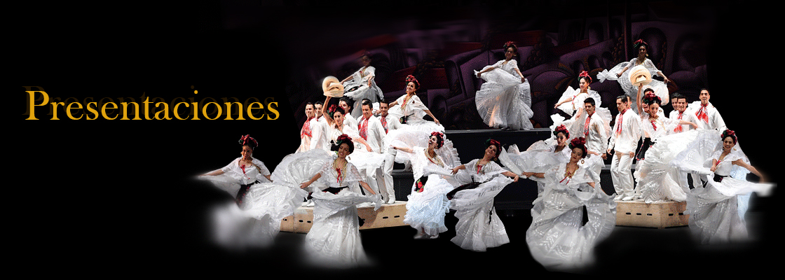
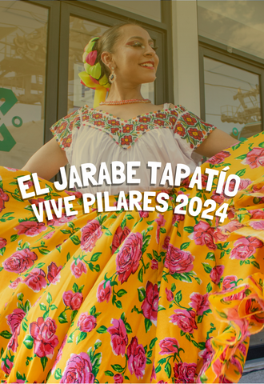
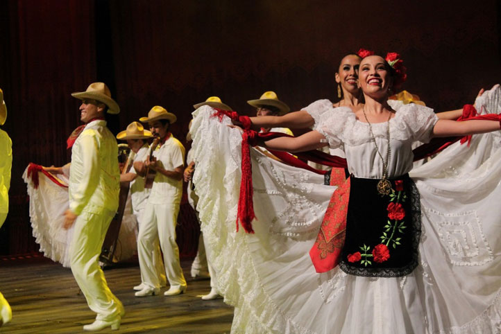
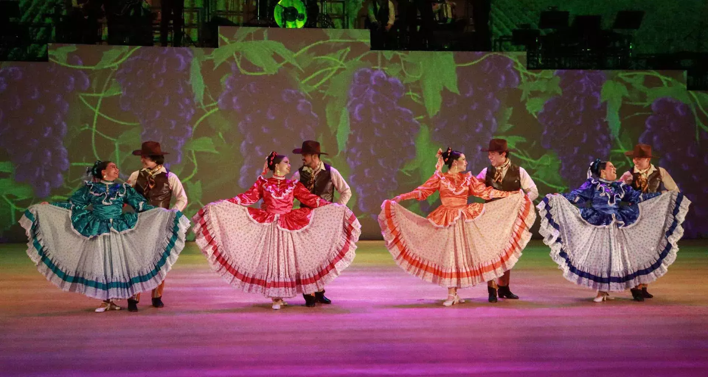
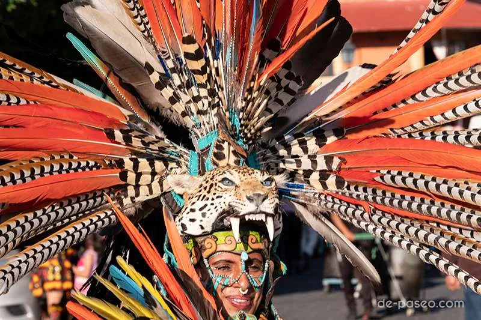
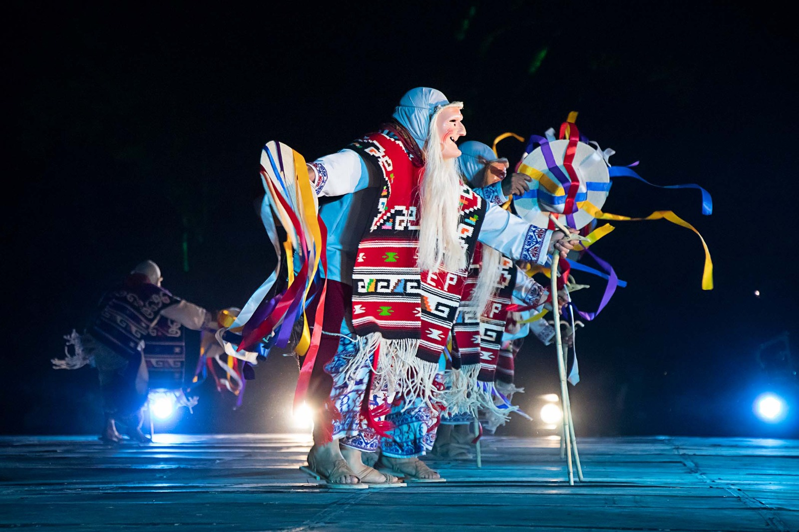

FOLKLORE MEXICANO
Folklore Mexicano

Ballet Folklórico De México De Amalia Hernández
Av. Juarez, Centro Histórico, Cuauhtémoc, 06050 Ciudad de México, CDMX

El Jarabe Tapatío VIVE PILARES
Plaza Garibaldi, Av. Eje Central Lázaro Cárdenas #43 Colonia Centro, 06010, Cuauhtémoc, Ciudad de México.

Son Jarocho
Coatzacoalcos Convention Center, Av. Abraham Zabludovsky 201, Transportistas, 96535 Coatzacoalcos, Veracruz.

¡Huapangos de México!
Av. Eugenio Garza Sada 2501 Sur, Tecnológico, 64849 Monterrey, N.L.
ㅤ

Fiesta de los Concheros
Templo de la Santa Cruz y Calles del Centro Histórico, Ciudad de México, CDMX.
ㅤ

Baile de los viejitos de Michoacán en la Guelaguetza
En La Guelaguetza, ciudad de Oaxaca de Juárez, Oaxaca, México.